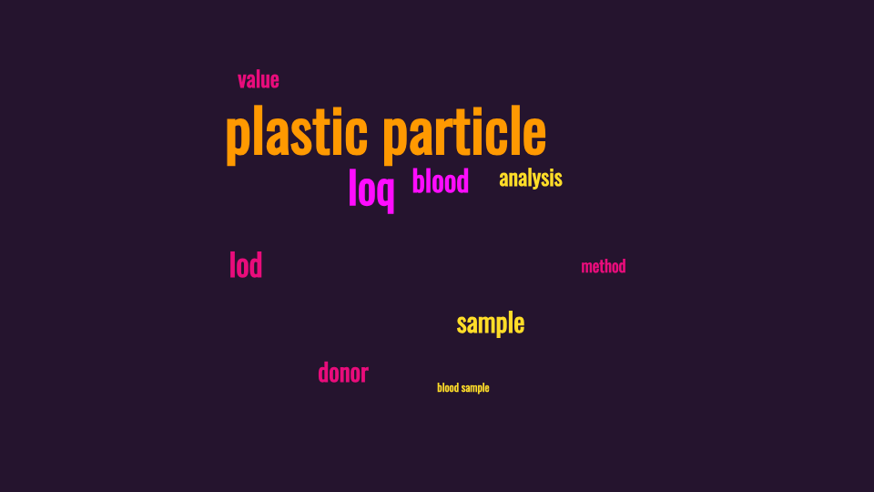
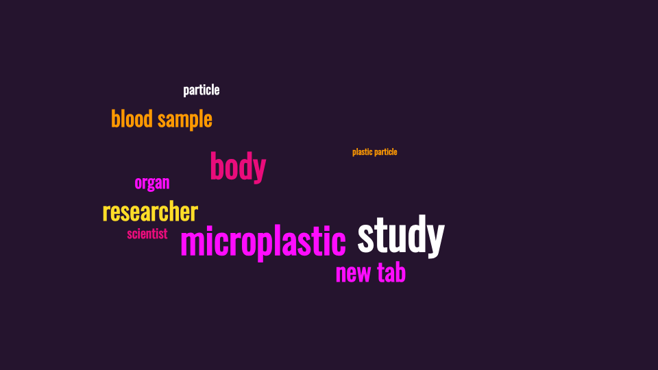
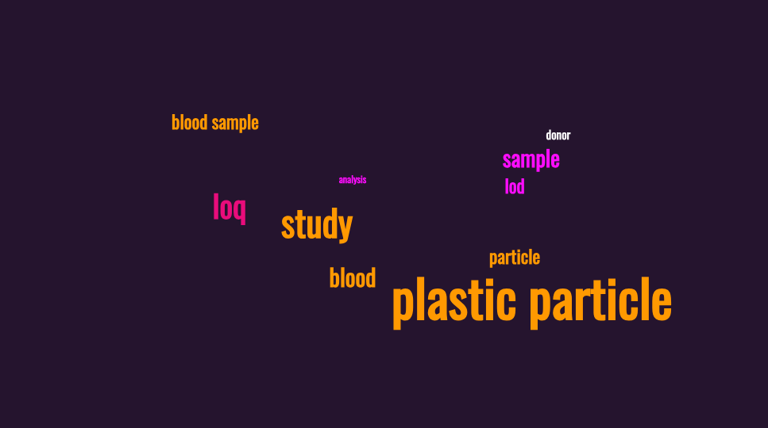

Convergence - Visual Journal
Science Materiality I (Similes) - Word Clouds
Readings
Journal Article
Discovery and quantification of plastic particle pollution in human blood (Leslie et al., 2022)
News Articles
Scientists find microplastics in blood for first time (Phys.org,2022)
Microplastics found in human blood for first time (The Guardian, 2022)
Microplastics found in human blood for first time, scientists say (CTV News, 2022)
Word Clouds
Journal Article

News Articles

Journal & News Articles
